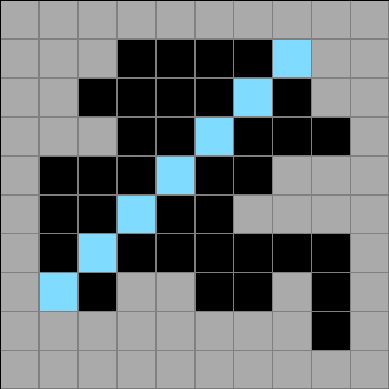
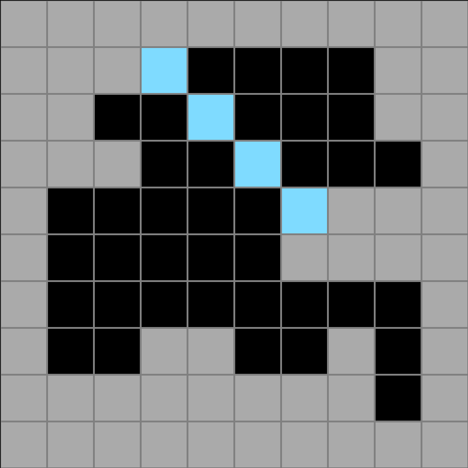
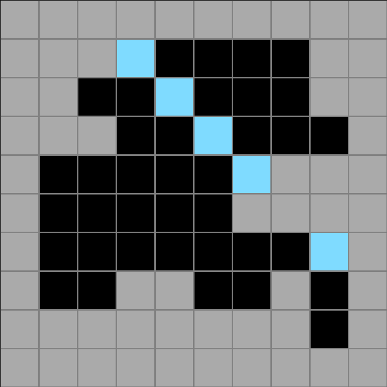
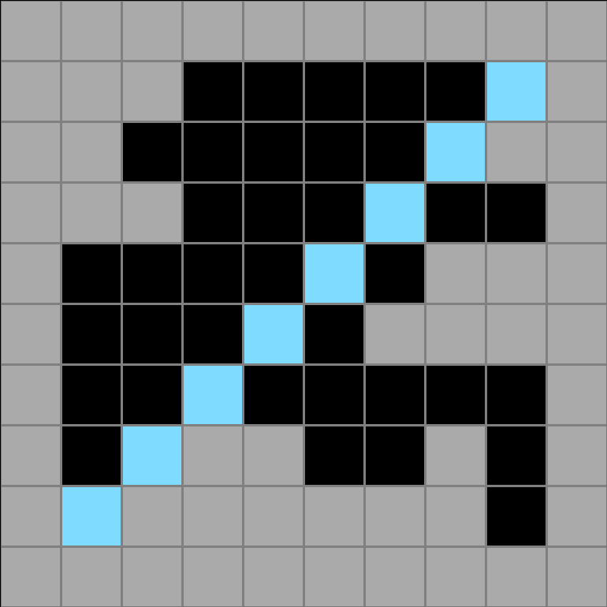
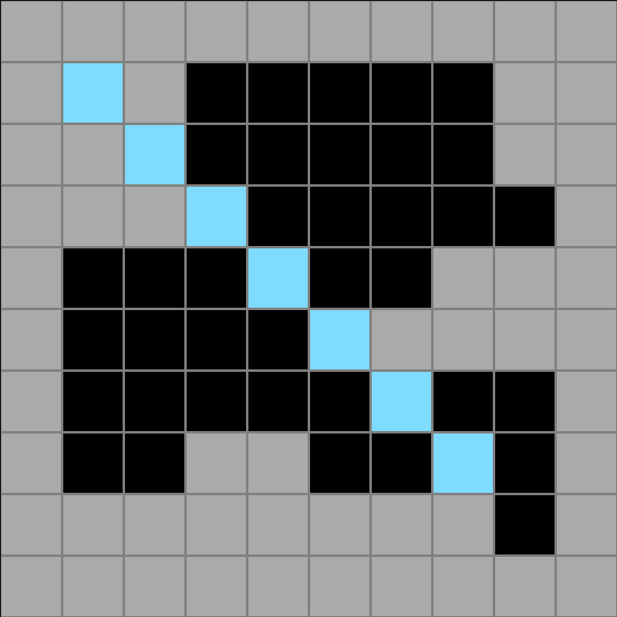

aa300dc3.json
Navigation
Train Examples


Test Example


Participant 1
Initial description: to use the max number of squares in a diagonal line
Final description: to use the max number of squares in a diagonal line

Participant 2
Initial description: Fill in with a diagonal band
Final description: Fill in with a diagonal band

Participant 3
Initial description: Insert a light blue diagonal line across the pattern. Decide whether to being the line at the top of bottom by chosing which edge has more mass. Meaning start from the edge with is more squarely shapped.
Final description: Insert a light blue diagonal line across the pattern. Decide whether to being the line at the top of bottom by chosing which edge has more mass. Meaning start from the edge with is more squarely shapped.

Participant 4
Initial description: Draw the longest diagonal line that will fit in the shape.
Final description: Draw the longest diagonal line that will fit in the shape.

Participant 5
Initial description: Find a path where a diagonal line can be drawn from one corner to the opposite corner. This line is colored blue.
Final description: Find a path where a diagonal line can be drawn from one corner to the opposite corner. This line is colored blue.

Participant 6
Initial description: I think the rule is to connect the two longest corners of the black tiles together in a diagonal direction using light blue tiles.
Final description: I think the rule is to connect the two longest corners of the black tiles together in a diagonal direction using light blue tiles.

Participant 7
Initial description: A diagonal line of light blue should be made from the top left black cell when possible. If it is not possible, make a diagonal line starting from the top right black cell. The line ends when it meets a tray cell.
Final description: A light blue diagonal line in the black cells starts from either the top right or top left black cell. The direction chosen is based on the longer diagonal line that can be created before hitting a gray cell.



Participant 8
Initial description: I thought you were to go from the corner out left/right and then go to the opposite corner with the color blue.
Final description: I was taking the blue color from one corner to the diagonal opposite corner. I had it start near 2 black squares.

